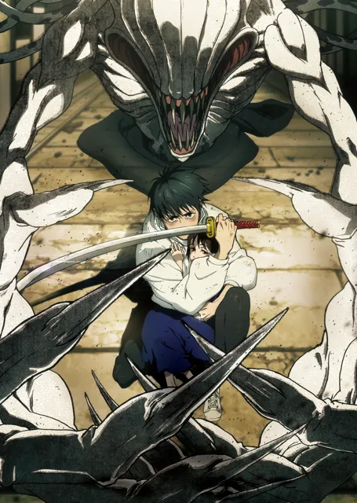
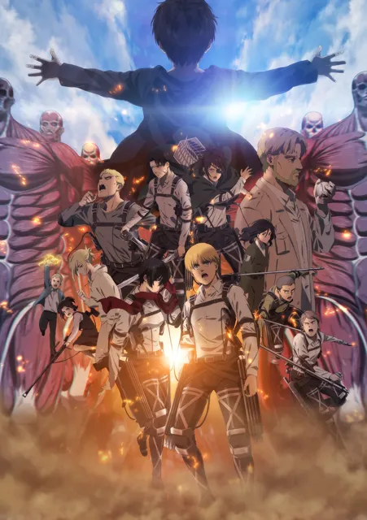
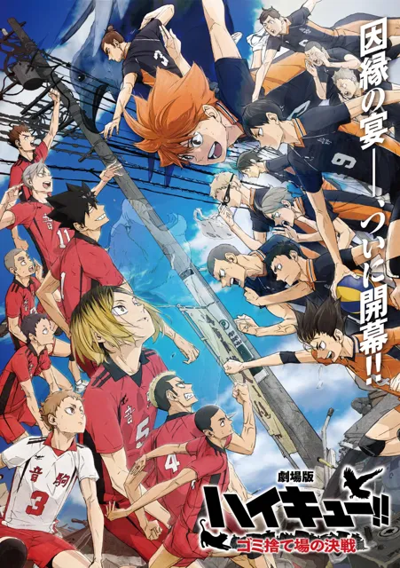
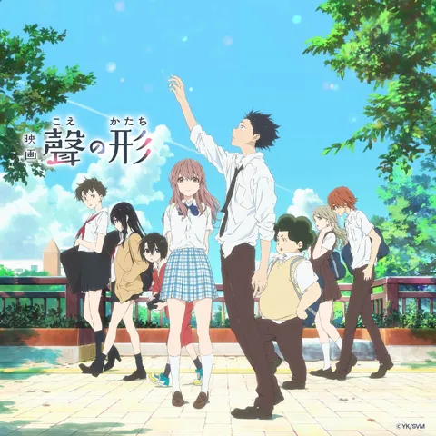

U-NEXTで配信中の映画21作品｜見放題かポイント作品かを作品ごとに紹介
本ページの情報は2026年11月24日時点のものです。最新の配信状況はU-NEXTサイトにてご確認ください。
アニメ映画（11作品）




劇場版 SPY×FAMILY CODE: White 見放題
スパイのロイド、殺し屋のヨル、超能力者のアーニャによる偽装家族が、家族旅行に出かける。旅の途中でアーニャが列車内で怪しいトランクを見つけ、騒動に巻き込まれていく。
アニメ映画・2023年・110分

劇場版「進撃の巨人」完結編 THE LAST ATTACK 見放題
仲間と決別したエレンが、巨人の大群「地鳴らし」で世界を滅ぼそうとする。生き残ったミカサやアルミンたちが、それを止めるために立ち向かう。
アニメ映画・2024年・144分

劇場版ハイキュー!! ゴミ捨て場の決戦 見放題
春高2回戦を勝ち上がった烏野高校が、長年の練習試合相手である音駒高校と公式戦で初めて対戦する。仲間であり最大のライバルでもある両校の一戦を描く。
アニメ映画・2024年・84分

劇場版ブルーロック -EPISODE 凪- 見放題
無気力な高校生・凪誠士郎が、同級生の御影玲王に才能を見出されてサッカーを始める。やがて二人のもとにブルーロック計画への招待状が届く。
アニメ映画・2024年・90分

『最終楽章 響け！ユーフォニアム』前編 見放題
3年生になった黄前久美子が部長となり、新入生や転校生を迎えた北宇治高校吹奏楽部は全国大会出場を決める。新体制での最後の一年を描く。
アニメ映画・2026年・120分

洋画（6作品）
ハリー・ポッターと賢者の石 ポイント作品（有料）
両親を亡くして親戚の家で育ったハリーは、11歳で魔法魔術学校の入学許可証を受け取る。反対を押し切って入学し、魔法の世界での生活が始まる。
洋画・2001年
邦画（4作品）
配信状況は2026年11月24日にU-NEXTの公式サービスサイトで確認しました。配信は入れ替わるため、申し込む前に公式サイトで確認してください。